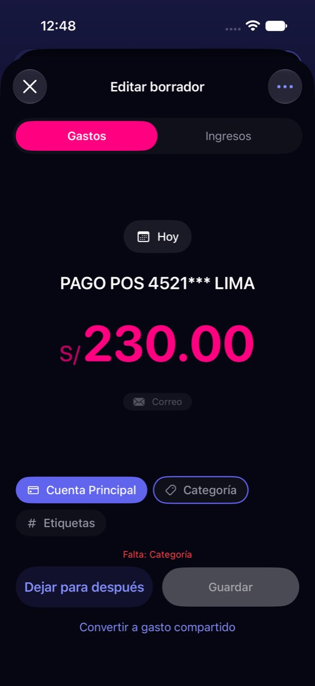
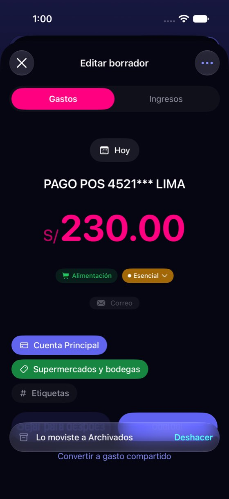
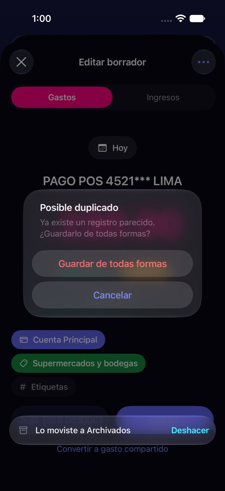

El borrador dudoso no dice por qué lo es, y el aviso de duplicado llega tarde y sin nombre
Hoy
Capturas del simulador (app de origin/2.3, semillas de prueba). Pasos hoy: 4 pasos hasta enterarse del duplicado (abrir, categoría, Guardar, alerta), y no dice cuál




De dónde sale
- Captura Capturas 01 y 11: «55 %» en la fila; el borrador abierto no lo explica.
- Captura Capturas 27-28: con categoría, «Guardar» saca «Posible duplicado · Ya existe un registro parecido. ¿Guardarlo de todas formas?».
- Código
InboxDraftEditSheet.swift:912-921y:1042-1065: la búsqueda de duplicados (mismo día, importe y cuenta) vive solo en el borrador abierto.DraftService.swift:532-560(lote) yInboxView.swift:1081(deslizar) no la llaman. - Código
InboxDraftRowView.swift:233-243: el porcentaje esconfidenceAmount< 0,7, sin texto. - Hipótesis Que el banco mande a veces el mismo pago que Apple Pay (P6) no está medido: es el caso en que el lote duplicaría.
Las opciones
De 3 a 5 alternativas con el mismo caso. Desliza cada recorrido; el anillo cian marca dónde toca Lucía.
El posible duplicado, nombrado en la fila y en el borrador
Yala ya sabe buscar un registro igual (mismo día, importe y cuenta). Lo busca al llegar el borrador, no al guardarlo, y lo dice donde se ve: en la fila («¿Es el mismo que Zara Jockey Plaza?») y arriba del borrador, con dos botones: Es el mismo (lo descarta) y Es otro.
Bandeja de Entrada
8 pendientesBandeja de Entrada
7 pendientesA favor
- Lucía decide con el dato delante, antes de tocar «Guardar».
- Usa la búsqueda que ya existe (mismo día, importe y cuenta).
- Descartar por duplicado deja rastro y se puede deshacer.
En contra
- Buscar al llegar cada borrador es una consulta más por borrador (barata: un día, un importe).
- Un falso parecido (dos cafés iguales) pide un toque más.
Ver lo que llegó y por qué Yala duda
El «55 %» de la fila (la confianza del importe) se sustituye por el motivo en palabras, y el borrador enseña el aviso del banco tal como llegó, para que Lucía reconozca el pago.
Bandeja de Entrada
8 pendientesComercio: PAGO POS LIMA
Monto: S/ 230.00 · 07/11 10:05
A favor
- Responde «¿qué es esto?» con lo que Lucía puede reconocer: el aviso del banco.
- Quita un número que nadie sabe leer.
En contra
- El aviso trae datos del banco: hay que decidir qué se guarda y cuánto tiempo (hoy el servidor no lo guarda).
- No resuelve el duplicado por sí sola.
El lote y el deslizamiento no guardan posibles duplicados
Hoy solo el borrador abierto avisa del duplicado: «Guardar los N listos» y deslizar a la derecha guardan sin mirar. Con este cambio, lo que se parece a un registro existente no entra en el lote y el resumen lo dice. En la maqueta, el banco mandó la categoría del dudoso: habría 7 listos y el lote guarda 6.
Bandeja de Entrada
8 pendientesA favor
- Cierra el único camino por el que hoy se guarda un duplicado sin aviso.
- No añade pantallas.
En contra
- El lote hace una búsqueda por borrador al guardar (o al llegar, si va con C1).
- Sigue sin decir con qué se parece si no va con C1.
Solo el texto del aviso de duplicado
La alerta de hoy («Ya existe un registro parecido») pasa a decir cuál: nombre, importe y hora, con tres salidas claras.
Zara Jockey Plaza · S/ 230.00 · hoy 10:12, en Cuenta Principal.
A favor
- El cambio más pequeño: un texto y un botón.
- Ofrece la salida que hoy falta: descartar el repetido.
En contra
- Llega igual de tarde: después de elegir categoría y tocar «Guardar».
- No toca el lote ni el deslizamiento.
Lado a lado
La última pantalla de cada recorrido, frente a hoy.
Bandeja de Entrada
7 pendientesComercio: PAGO POS LIMA
Monto: S/ 230.00 · 07/11 10:05
Zara Jockey Plaza · S/ 230.00 · hoy 10:12, en Cuenta Principal.
Comparación
| Opción | Pasos para el caso (maqueta) | Esfuerzo | Riesgo | Reabre |
|---|---|---|---|---|
| Hoy | 4 pasos hasta enterarse del duplicado (abrir, categoría, Guardar, alerta), y no dice cuál | — | — | — |
| C1 · El posible duplicado, nombrado en la fila y en el borrador | 2 toques: abrir y «Es el mismo» (hoy: abrir, elegir categoría, Guardar y leer una alerta sin nombre) | medio | bajo | — |
| C2 · Ver lo que llegó y por qué Yala duda | 1 toque para ver el aviso (hoy: tocar el chip de origen, solo si el borrador trae el texto) | medio | medio | La privacidad del correo: hoy «Yala lee cada correo y no lo guarda» |
| C3 · El lote y el deslizamiento no guardan posibles duplicados | Igual que hoy para el lote | bajo | bajo | — |
| C4 · Solo el texto del aviso de duplicado | Igual que hoy (4 pasos), con la respuesta a la vista | bajo | bajo | — |
Lente de perfiles
Perfiles simulados, no entrevistas Los siete perfiles de la revisión del usuario nuevo, usados como lentes. riesgo alto de trabarse · medio · bajo.
| Perfil | Hoy | C1 | C2 | C3 | C4 |
|---|---|---|---|---|---|
| P1 · Migrante de Excel | no puede comprobar contra su hoja | lo compara con su hoja | reconoce el pago | — | — |
| P2 · Principiante abrumado | «55 %» y «parecido» no le dicen nada | le dicen qué pasa | texto claro | no lo mete a ciegas | llega tarde |
| P3 · Anotador rápido que no lee | guarda el lote y duplica | lo ve sin abrir | no lo lee | le protege sin leer | solo si abre el borrador |
| P4 · Experto de otra app | espera ver el origen | lo esperado | lo esperado | — | — |
| P5 · Llega por una invitación de grupo | — | — | — | — | — |
| P6 · Varias monedas y tarjeta | banco y Apple Pay del mismo pago | dos fuentes del mismo pago | ve la tarjeta | correo + Apple Pay del mismo pago | el lote sigue sin mirar |
| P7 · Texto grande, a veces en iPad | un número pequeño | texto, no un % | más texto | — | — |
Recomendación: C1
Nombrar el posible duplicado en la fila y en el borrador, con «Es el mismo» y «Es otro», junto con C3 para que el lote no lo guarde. Es lo que evita contar dos veces el mismo dinero —la regla del dominio en finanzas— y usa la búsqueda que ya existe. C2 (enseñar el aviso) es valiosa pero abre una decisión de privacidad que es tuya.
Qué decide Jürgen
- ¿Se busca el duplicado al llegar el borrador (C1) o se sigue buscando al guardar?
- ¿El lote y el deslizamiento saltan los posibles duplicados (C3)?
- ¿Se guarda el texto del aviso del banco para enseñarlo (C2)? Hoy la pantalla promete que no se guarda.
- ¿Se quita el «55 %» de la fila?
Revisión por vistas 2.3 · Bandeja, Yala IA, correo del banco, Apple Pay y Siri. Maquetas en HTML con datos ficticios: no son la app. Pasos contados sobre las maquetas; los de «Hoy», en el simulador o en el código citado.